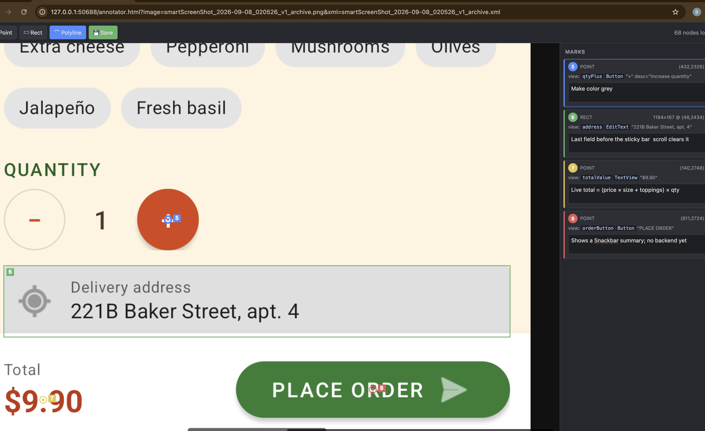

smart-screenshot — screenshot + UI dump XML, annotated and handed to Claude Code
Two Claude Code skills that let Claude read a mobile screen instead of squinting at a picture. Every capture is a PNG paired with the view hierarchy as XML: every visible node with its exact pixel bounds, resource-id or test tag, text and content-description. Claude greps it, computes tap coordinates from it, and ties “this button” to a specific node.

How it works
Capture, annotate, hand off. The XML is the point; the PNG stays for the human and for rendering questions.
/smartScreenshot
Captures the current screen of an Android device or an iOS simulator as a paired PNG + XML hierarchy dump,
filed under smartScreenShot/ with a date, version and commit-slug filename.
Annotate
A small loopback-only server opens the annotator in your browser. Draw points, rectangles and polylines,
comment each mark. ⌘/Ctrl+S saves <stem>.marks.json next to the PNG, which is never modified.
/processSmartScreenshot
Reads a capture back, newest or -N back, reports what is on the screen, lists your marks with the
views they landed on, and offers to act on the comments that read as change requests.
What a capture looks like
smartScreenShot_2026-05-07_143022_v186_fix-the-th.png
smartScreenShot_2026-05-07_143022_v186_fix-the-th.xml
smartScreenShot_2026-05-07_143022_v186_fix-the-th.marks.json (after annotating)
smartScreenShot_ios_2026-05-07_143540_v186_fix-the-th.png (--ios)
smartScreenShot_ios_2026-05-07_143540_v186_fix-the-th.xmlWhat the XML gives Claude
Each <node> carries bounds="[x1,y1][x2,y2]", resource-id, text,
content-desc, class and the boolean flags uiautomator reports. On a Jetpack Compose or
Compose Multiplatform app, resource-id is the Modifier.testTag (with
testTagsAsResourceId = true at the root); point testTagsFile at the file that lists the tags and
Claude maps an id back to the composable. On iOS the same XML shape is produced from Maestro's hierarchy, with bounds
rescaled from points to pixels and the scale recorded on the root element.
See docs/ios.md.
Requirements
Android captures work on macOS, Linux and Windows. iOS captures need macOS; the other two platforms refuse --ios with a clear message.
| Needed | For | Notes |
|---|---|---|
| bash 3.2+ | everything | macOS /bin/bash, any Linux, or Git Bash on Windows |
| Python 3 | everything | under any of its names: python3, python, or the py launcher |
| git | the commit slug | optional; without it the filename just has no slug |
adb | Android captures | Android platform-tools on PATH; a device or emulator with USB debugging enabled |
Xcode + simctl | iOS captures | macOS only; simulators only, no physical iPhone |
| Java + Maestro | iOS captures | curl -Ls https://get.maestro.mobile.dev | bash; Maestro reads the iOS view hierarchy |
jq, xmllint | optional | used when present; the config reader falls back to Python, the XML check to grep |
Install
Clone once, then run the installer from inside the project you want the skills in.
macOS and Linux
git clone https://github.com/blackorange0506/smart-screenshot ~/src/smart-screenshot
cd ~/your/project
bash ~/src/smart-screenshot/install.shWindows, from Git Bash
git clone https://github.com/blackorange0506/smart-screenshot /c/src/smart-screenshot
cd /c/your/project
bash /c/src/smart-screenshot/install.shThe installer copies the package into .claude/ (two skills, a setup skill, the shared libraries),
git-ignores the capture folder, pins the scripts to LF, and writes .claude/smart-screenshot/config.json
pre-filled with what it can detect: the Android applicationId with flavour and build-type suffixes,
the iOS bundle id, where the build number lives, and a TestTags.kt if there is one.
Re-running upgrades the package files and leaves your config and captures alone.
| Flag | Effect |
|---|---|
--target DIR | install into DIR instead of the current directory |
--no-detect | write the config with empty values instead of detecting |
--dry-run | print what would change, write nothing |
--force | reset config.json from the example; the old one is kept as config.json.bak |
If Claude Code is already open in the project, restart it: a new .claude/skills/ directory is
only seen from the next session. Then, optionally, run /smartScreenshotSetup, which walks through the
config values, checks the tools on the machine, and runs the device-free self-tests.
uninstall.sh removes everything the installer added and keeps your captures.
Use
Connect a device or boot a simulator, open the screen you want Claude to see, and:
/smartScreenshotAndroid: capture, then open the annotator
/smartScreenshot --no-annotatecapture only, what Claude runs when you ask “what's on the screen?”
/smartScreenshot --with-boundsalso a PNG with Show Layout Bounds on (Android)
/smartScreenshot --with-tapsalso a PNG with Show Taps on (Android)
/smartScreenshot --iosthe booted (or configured) iOS simulator
/processSmartScreenshotread the newest capture and its marks
/processSmartScreenshot -1the one before
From a shell
The skills run two scripts you can also call yourself:
bash .claude/skills/smartScreenshot/scripts/smartScreenshot.sh --no-annotate | tail -1 # prints the XML path last
bash .claude/skills/processSmartScreenshot/scripts/select_smartScreenshot.sh -1 # KEY=path linesConfigure
.claude/smart-screenshot/config.json, all keys optional; environment variables override per run.
docs/configuration.md has every key and every variable.
{
"outputDir": "smartScreenShot",
"slugMaxLength": 10,
"android": { "package": "", "packages": [], "deviceSerial": "", "deviceHost": "" },
"ios": { "bundleId": "", "simulators": ["iPhone 16", "iPhone 15"], "maestroBin": "", "hierarchyTimeout": 90 },
"version": { "file": "", "regex": "" },
"testTagsFile": "",
"annotator": { "port": 0 }
}The one value worth setting by hand is the app: android.package (or the android.packages priority
list for flavours) and ios.bundleId. Without them the capture uses the foreground app, which is right until a
dialog from another app is up. version.file + version.regex name where the build number lives in
the repo, for captures taken when the app is not installed.
Develop
Device-free tests with a fake adb; CI runs them on Ubuntu, macOS (both bashes) and Windows (Git Bash), then installs into a fresh repo and captures on each.
bash tests/run.sh # every tests/*.test.sh
/bin/bash tests/run.sh # the same under macOS's bash 3.2
bash scripts/lint.sh # shellcheck + py_compile
bash scripts/check_banlist.sh # no trace of the project this was extracted from